한줄 요약 — 관절·밸브·엔진 회전수·유온 이력으로 4개 유압 액추에이터의 결합 동역학을 학습하고, 그 신경 시뮬레이터의 TRPO 정책이 파일럿 밸브 전류를 직접 출력해 12톤 굴착기의 말단을 안정화했으나 실험은 수평 차체의 2차원 자유공간에 한정된 무부하 sim-to-real이다.
1.연구 배경 및 동기
기계별 유압 모델과 게인 튜닝을 데이터로 대체할 수 있는가
상용 유압 굴착기의 팔 위치제어는 유압 결합, 실린더 마찰, 밸브 데드존, 입력 지연 때문에 선형 제어기로 다루기 어렵다. 같은 모델의 장비라도 제작 공차와 마모가 다르고, 엔진 회전수와 오일 온도 및 작업 자세에 따라 응답이 달라진다. 특히 연구에 사용한 12 t Menzi Muck M545는 디퍼 링크가 비표준이고 붐 실린더가 캐빈 아래에 있어 전체 기구를 정밀 계측해 해석모델을 만드는 비용이 크다. 저자들은 이 문제를 기계별 모델 식별과 게인 조정이 아니라 운전 데이터로 흡수하는 제어 합성 문제로 바꾼다.
목표는 굴착기 링크 길이와 관절 상태만으로 삽 접촉점의 목표 위치를 주면, 정책이 네 개 팔 액추에이터의 파일럿 밸브 전류를 바로 생성하도록 하는 것이다. 실제 장비에서 모은 입출력 데이터로 비선형 액추에이터 모델을 지도학습하고, 그 모델을 고정한 시뮬레이터에서 강화학습 정책을 훈련한 다음 출력 필터나 사후 보정 없이 실차에 배치한다. 논문은 이를 전 크기 굴착기에 시뮬레이션 학습 RL 정책을 직접 배치한 최초 사례로 규정하며, 자유공간 위치 스텝과 원형 궤적을 통해 가능성을 검증한다.
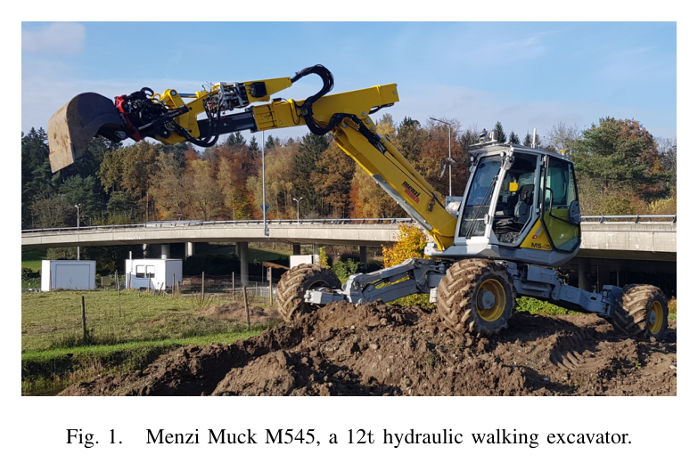
원문 Figure 1 · PDF p.2 — Fig. 1. Menzi Muck M545, a 12t hydraulic walking excavator.
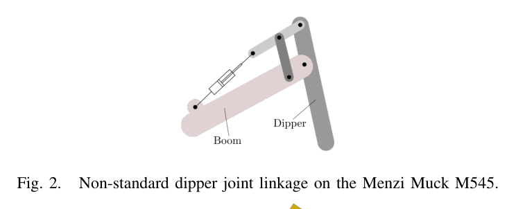
원문 Figure 2 · PDF p.3 — Fig. 2. Non-standard dipper joint linkage on the Menzi Muck M545.
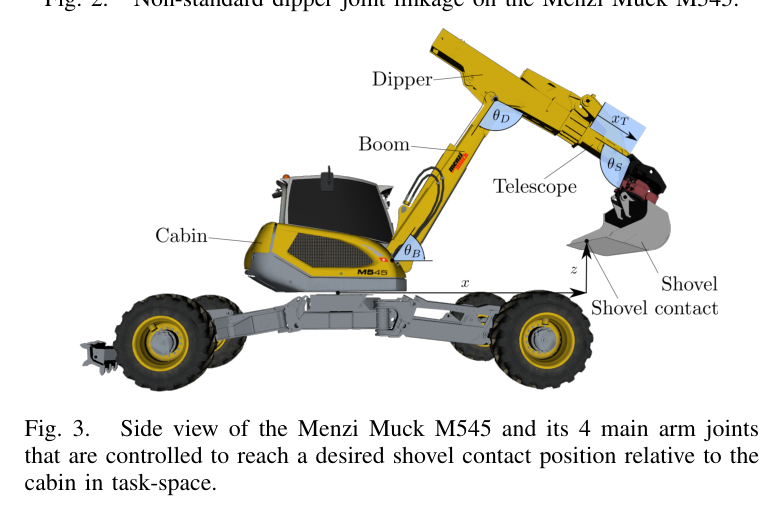
원문 Figure 3 · PDF p.3 — Fig. 3. Side view of the Menzi Muck M545 and its 4 main arm joints that are controlled to reach a desired shovel contact position relative to the cabin in task-space.
선행 연구의 한계
PD/PID 제어는 특정 자세·엔진 속도·예열 상태에 맞춘 게인과 속도-밸브 전류 룩업테이블이 필요하며, 기준 자세에서 멀어질수록 성능이 저하된다.
고정밀 비선형 모델 기반 제어는 기구와 유압계의 해석모델을 요구하고, 많은 선행 실험은 상용 장비의 2단 파일럿 밸브가 아니라 고가의 메인단 서보밸브에 의존했다.
학습형 역동역학이나 온라인 신경제어 선행연구는 시뮬레이션에 머물거나 자유공간 추종오차가 컸고, 표준 굴착기가 직접 받을 수 있는 밸브 명령으로 실차 sim-to-real을 입증하지 못했다.
토양-도구 모델을 포함한 학습은 토양모델의 20~30% 오차 또는 높은 계산비용 때문에 RL용 대규모 시뮬레이션에 그대로 쓰기 어렵다.
이 연구의 기여
4개 액추에이터의 결합효과를 하나의 MLP로 학습하고, 속도·명령 이력과 rpm·유온으로 지연과 운전조건 의존성을 표현했다.
학습된 액추에이터 모델을 물리 장비 대신 사용하는 신경 시뮬레이터를 만들고, TRPO 정책이 목표 삽 위치에서 파일럿 밸브 전류까지의 역기구학·역동역학을 함께 학습하게 했다.
2시간의 실차 데이터만으로 학습한 정책을 12 t 굴착기에 수정 없이 배치해 1 m 기준 스텝을 안정화하고, 학습하지 않은 연속 원형 궤적도 추종했다.
수동 튜닝 IK 제어기와의 정량 비교를 제시해 데이터 기반 정책의 현재 정확도와 기계별 설계 지식 절감이라는 장점을 동시에 드러냈다.
2.방법론 및 시스템 구성
방법은 데이터 수집, 액추에이터 모델 학습, RL 제어기 학습, 실차 직접 배치의 네 단계다. M545의 붐·디퍼·텔레스코픽·삽 관절에 대해 관절 위치와 속도, 정규화된 밸브 명령, 엔진 회전수, 유압유 온도를 기록한다. 액추에이터 모델은 현재 관절속도만 베끼는 해를 피하도록 다음 속도 자체가 아니라 두 시점의 속도 차이를 예측하며, 예측 속도는 시간 적분해 관절 위치로 전개된다.
제어 정책은 목표 삽 접촉점과 현재 말단 상태, 액추에이터 모델과 동일한 상태·명령 이력을 관측하고 네 개 밸브 설정값을 출력한다. 10 s 에피소드마다 임의 자세와 유효 목표를 표본화하고, 데이터에서 관측된 범위의 유온과 엔진 rpm을 다시 표본화한다. 관절한계·자기충돌·지면충돌이면 -1로 종료하며, 목표거리 보상과 입력 크기·입력 변화 페널티를 결합해 안정적이고 매끄러운 제어를 유도한다.
처리 파이프라인
1
실차 계측과 탐색 명령
Sick 드로와이어 센서로 실린더 변위를 0.01 mm 해상도로 읽고 미분해 속도를 얻는다. 붐·디퍼는 충돌을 피하도록 게임패드로 기본 신호를 주고, 텔레스코픽·삽은 무작위 램프를 사용한다. 여기에 최대 약 2 Hz의 진폭·주파수 변조 사인을 중첩해 2시간 동안 100 Hz로 작업영역을 탐색한다.
2
결합 액추에이터 신경모델
3개 은닉층과 층당 128 ReLU 노드인 단일 MLP가 네 관절을 함께 모델링한다. 최근 0.1 s 관절속도 이력, 0.99 s 밸브명령 이력, 현재 관절위치, 엔진 rpm, 유온에서 0.01 s 뒤 관절속도를 예측해 공동 유압공급에 의한 결합과 최대 0.7 s 입력지연을 포함한다.
3
지도학습과 롤아웃 점검
입력을 평균 0·표준편차 1로 정규화하고 Adam과 MSE로 단일 배치 20,000 epoch를 학습한다. 학습 90%와 검증 10%를 분리하고, 실차와 모델에 동일 명령을 주되 모델은 자기 예측상태로 전진시켜 장시간 누적오차와 지연 재현을 확인한다.
4
TRPO 정책 최적화
정책망과 가치망은 각각 2층·128 ReLU MLP다. TRPO와 GAE로 10 Hz 행동 정책을 학습하고 액추에이터 모델은 100 Hz로 적분한다. 할인율 0.99, 입력 크기 및 입력 변화 페널티, 200/400 반복 동안 1에서 10으로 증가하는 커리큘럼 계수를 사용한다.
5
노이즈 주입과 운전조건 랜덤화
관절 위치·속도, 말단 위치·속도, 엔진 rpm, 밸브 입력에 원문에 명시된 균등 백색잡음을 더하고 에피소드마다 유온과 rpm을 실측 범위에서 뽑는다. 학습 모델의 작은 편차와 실차 센서·구동 오차를 정책이 견디게 하는 단계다.
6
실차 직접 배치와 비교
학습된 정책 출력을 보정 없이 Hawe PMZ 파일럿단 비례감압밸브에 전달한다. 정책은 학습 때 10 Hz였지만 실차에서는 100 Hz로 실행하며, 1 m 위치 스텝과 작업공간 여러 위치의 원형 궤적에서 수동 튜닝 계층형 IK 제어기와 비교한다.
목표 삽 위치 오차를 줄이되 큰 밸브입력과 급격한 입력변화를 벌한다. 마지막 항이 매끄러운 실차 명령에 특히 중요하며 커리큘럼 계수가 학습 난도를 점차 높인다.
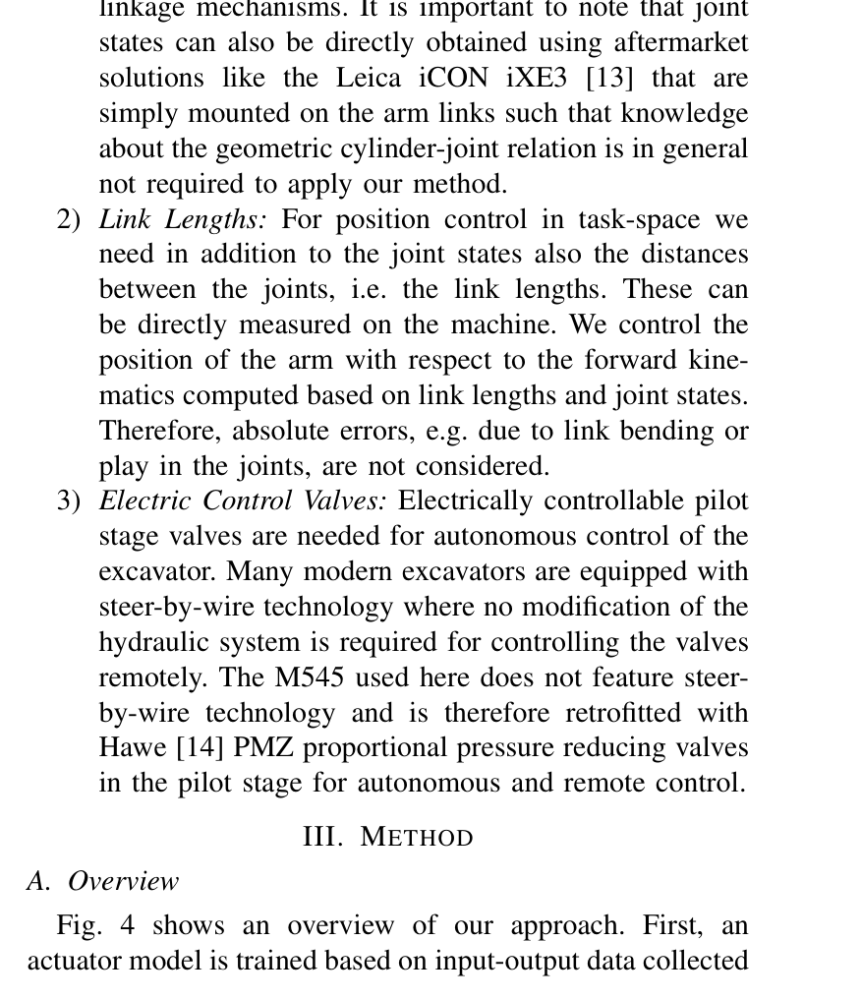
원문 Figure 4 · PDF p.3 — Fig. 4 shows an overview of our approach. First, an actuator model is trained based on input-output data collected
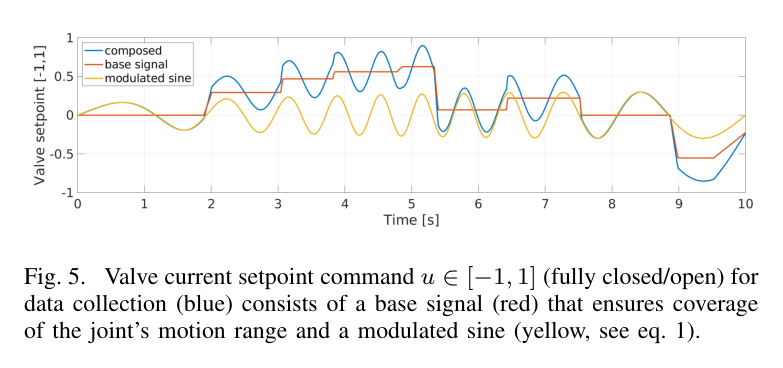
원문 Figure 5 · PDF p.4 — Fig. 5. Valve current setpoint command u ∈[−1, 1] (fully closed/open) for data collection (blue) consists of a base signal (red) that ensures coverage of the joint’s motion range and a modulated sine (yellow, see eq. 1).
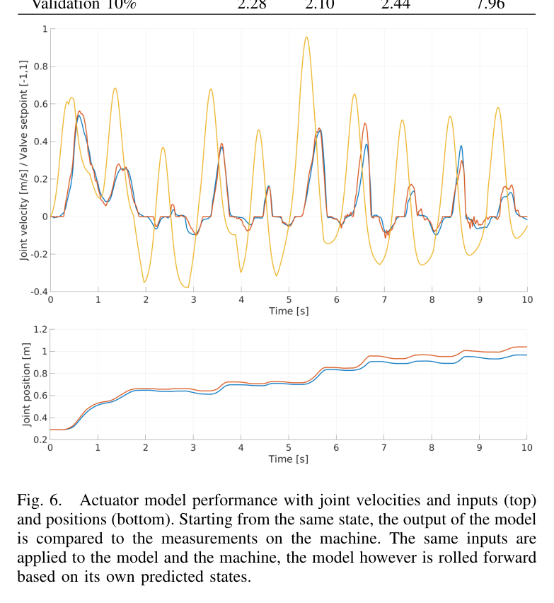
원문 Figure 6 · PDF p.5 — Fig. 6. Actuator model performance with joint velocities and inputs (top) and positions (bottom). Starting from the same state, the output of the model is compared to the measurements on the machine. The same inputs are applied to the model and the machine, the model however is rolled forward based on its own predicted states.
3.핵심 기술
지연·데드존·결합을 담는 이력 기반 액추에이터 모델
핵심은 각 실린더를 독립 모델로 보지 않고 네 액추에이터를 하나의 네트워크에 넣는 것이다. 같은 펌프와 어큐뮬레이터에서 유량을 나누므로 여러 관절을 빠르게 움직일 때 엔진 rpm이 순간 저하되고 응답이 바뀐다. 속도·명령 이력과 rpm·유온을 함께 주고 속도 증분을 예측해 결합, 마찰, 지연과 항등복사 위험을 함께 다룬다.
밸브 이력 0.99 s, 0.03 s 간격 표본
관절속도 이력 0.1 s
MLP 3×128 ReLU, 네 액추에이터 공동 출력
엔진 rpm·유압유 온도를 운전조건 변수로 포함
말단 목표에서 파일럿 밸브까지 직접 학습하는 TRPO 정책
정책은 별도 역기구학과 속도 PID 없이 목표 삽 위치에서 네 밸브 명령까지 직접 매핑한다. 여유자유도, 비선형 응답, 관절한계 회피를 함께 학습하며, 한계·충돌을 종료조건으로 경험해 IK 제어기가 텔레스코픽 한계에 닿은 원형 궤적에서도 급변을 피했다.
TRPO actor-critic와 GAE
정책·가치망 각각 2×128 ReLU
10 s 무작위 목표 에피소드
출력 후 필터·수동 보정 없음
표준 파일럿단 밸브를 유지한 실차 sim-to-real
M545는 steer-by-wire가 아니므로 Hawe PMZ 비례감압밸브를 파일럿단에 병렬 장착했다. 고가 메인단 서보밸브 없이 정책이 전류 설정값을 직접 명령하며, 큰 위치 스텝과 학습하지 않은 원형 궤적을 추종했다. 다만 이는 수평 차체의 2차원 자유공간 sim-to-real 입증이다.
12 t Menzi Muck M545
붐·디퍼·텔레스코픽·삽 4관절
실차 실행 100 Hz
삽 접촉점의 캐빈 상대 2D 위치제어
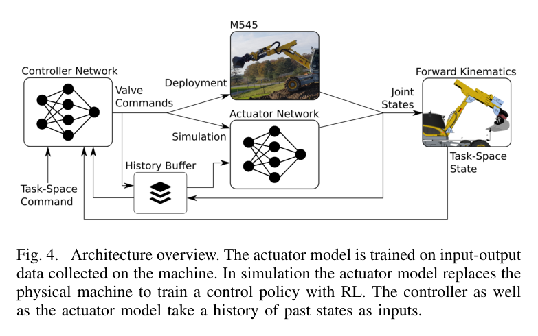
원문 Figure 4 · PDF p.4 — Fig. 4. Architecture overview. The actuator model is trained on input-output data collected on the machine. In simulation the actuator model replaces the physical machine to train a control policy with RL. The controller as well as the actuator model take a history of past states as inputs.
4.실험 결과
실험 환경·장비·데이터
12 t Menzi Muck M545 보행 굴착기, Hawe PMZ 파일럿단 전기비례밸브, Sick 드로와이어 변위센서, AMD Ryzen 9 3950X·32 GB RAM·RTX 2080S 학습 PC를 사용했다.
4개 팔 관절 위치·미분 속도, 밸브 설정값, 디젤 엔진 rpm, 유압유 온도를 수평 캐빈·일정 엔진 설정에서 2시간 동안 100 Hz로 수집했다.
실험 환경은 토양 접촉이 없는 자유공간이며, 말단 삽 접촉점은 캐빈 상대 x-z 평면에서 제어된다.
실험 프로토콜
액추에이터 데이터는 90% 학습·10% 검증으로 나누고 항등 속도예측과 RMSE를 비교하며, 동일 명령열로 자기회귀 롤아웃을 정성 점검했다.
실차에서는 1 m x방향 위치 기준 스텝을 주어 안정화를 확인한 뒤, 작업공간 여러 위치에서 6개 원형 궤적을 5차 스플라인으로 시간척도화해 추종했다.
원형 궤적은 평균 말단속도 0.1 m/s, 최대 0.1875 m/s로 주고 학습 정책에는 100 Hz 위치목표만, IK 비교기에는 스플라인 위치와 속도를 함께 제공했다.
비교 기준
액추에이터 모델은 현재 속도를 그대로 다음 속도로 내는 identity mapping과 비교했다.
궤적 추종은 실린더 속도 PID와 피드포워드 전류 룩업테이블, 기구학적 실린더-관절 변환을 수동 조정한 계층형 최적화 IK 제어기와 비교했다.
평가 지표
관절속도 예측 RMSE(boom, dipper, telescope, shovel)
6개 원형 궤적의 평균·최대 Cartesian 위치오차
최대 Cartesian 속도와 정규화 성능지표 ρ=최대오차/최대속도의 궤적 평균
기준 스텝 및 원형 궤적의 안정성·관절한계 회피
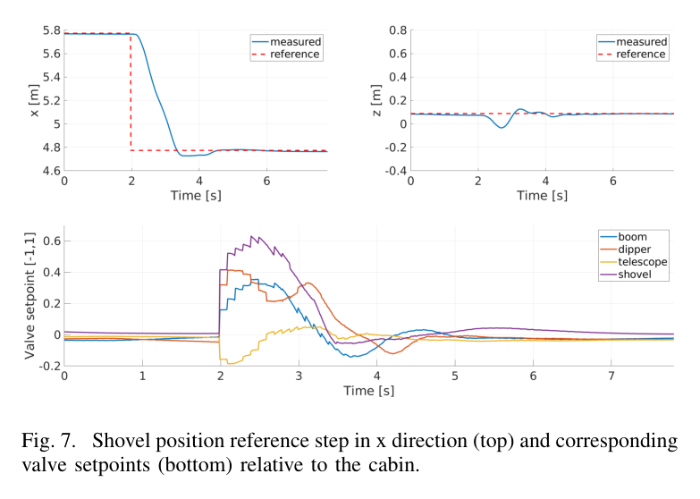
원문 Figure 7 · PDF p.6 — Fig. 7. Shovel position reference step in x direction (top) and corresponding valve setpoints (bottom) relative to the cabin.
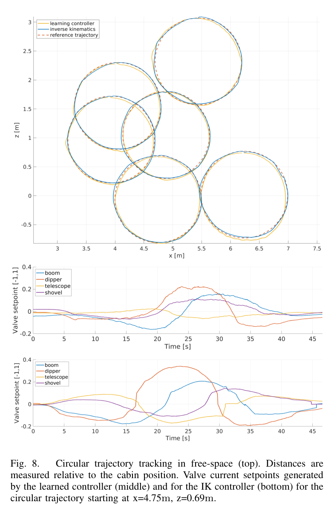
원문 Figure 8 · PDF p.6 — Fig. 8. Circular trajectory tracking in free-space (top). Distances are measured relative to the cabin position. Valve current setpoints generated by the learned controller (middle) and for the IK controller (bottom) for the circular trajectory starting at x=4.75m, z=0.69m.
핵심 결과 해석
액추에이터 모델은 검증 데이터에서 네 관절 모두 항등 예측보다 낮은 속도 RMSE를 냈다. 특히 명령·속도 이력을 사용해 최대 0.7 s 응답지연을 재현했고, 텔레스코픽 롤아웃은 모델의 이전 예측을 다시 입력하는 조건에서도 넓은 동작범위에 걸쳐 실차 위치·속도와 가깝게 유지됐다. 이는 RL 환경이 단일 스텝 회귀뿐 아니라 연속 폐루프 학습에 사용할 만한 동특성을 담았다는 근거다.
학습 정책은 1 m 위치 스텝을 안정화했고 6개 원형 궤적을 직접 학습하지 않았는데도 평균 7.8 cm, 최대 13.5 cm 오차로 추종했다. 전용 IK 제어기의 1.4 cm·3.6 cm보다 정확도는 낮고 정규화 지표도 0.61 s 대 0.14 s로 불리하다. 저자들은 정책이 기준속도를 입력받지 않아 움직이려면 목표와 오프셋이 필요하다는 구조적 이유를 짚는다. 그럼에도 기계별 게인 조정 없이 2시간 데이터로 얻은 정책을 표준 파일럿 밸브 장비에 그대로 옮겨 안정 제어했다는 것이 주된 결과다.
실차 100 Hz 실행은 학습의 10 Hz보다 성능을 높였고, RL 정책은 IK가 명령 급변을 보인 텔레스코픽 관절한계를 피했다.
자율굴착 시스템 관점에서 이 논문은 작업계획보다 아래쪽의 유압 실행계층을 자동으로 만드는 방법을 제시한다. 상위 계획기가 버킷 위치·속도·힘 목표를 생성해도 파일럿 밸브의 데드존과 지연을 안정적으로 역변환하지 못하면 실차 성능이 무너진다. 실차 로그에서 만든 신경 액추에이터 모델을 정책 학습용 디지털 대리모델로 쓰는 구조는 장비별 제어기 튜닝 비용을 줄이는 현실적인 경로다.
다만 현 단계의 정책을 곧바로 굴착에 적용할 수는 없다. 접촉작업에서는 실린더 압력, 토양저항, 차체 자세와 지지상태가 필수 상태가 되고 안전 제약도 힘·관절·충돌 한계를 명시해야 한다. 따라서 이 연구는 힘 기반 굴착 상태기나 작업계획기와 결합될 저수준 데이터 기반 유압 제어 모듈로 보는 것이 정확하다.
장비별 2시간 탐색 로그로 액추에이터 대리모델을 만들면 여러 굴착기 형식에 동일한 학습 파이프라인을 반복 적용할 수 있다.
밸브·속도 이력과 rpm·유온을 포함한 관측설계는 압력 이력과 중력방향을 더해 토양접촉용 정책으로 확장할 수 있다.
관절한계·충돌을 종료조건으로 학습한 방식은 상위 버킷 궤적을 실행할 때 저수준 정책이 기구학 한계를 피하도록 만드는 안전학습 단서가 된다.
전용 IK보다 낮은 정확도는 정책에도 기준속도·자세와 명시적 제약이 필요함을 보여준다.
7.전체 그림·표
본문 핵심 위치에 배치하지 않은 원문 Figure와 Table을 원문 페이지 순서로 수록한다.
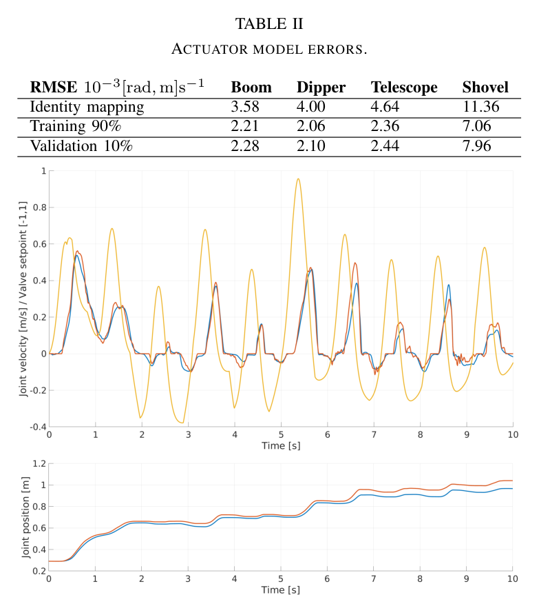
원문 Table II · PDF p.5 — TABLE II ACTUATOR MODEL ERRORS.
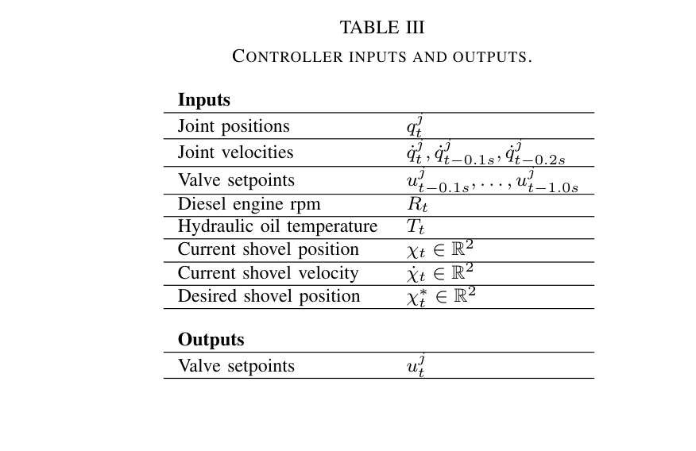
원문 Table III · PDF p.5 — TABLE III CONTROLLER INPUTS AND OUTPUTS.